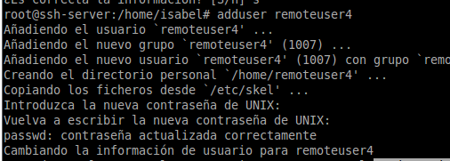
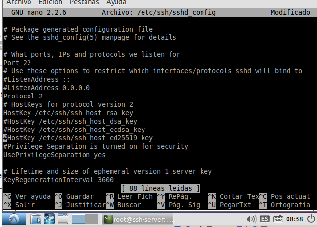
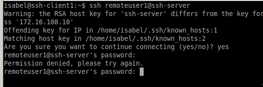
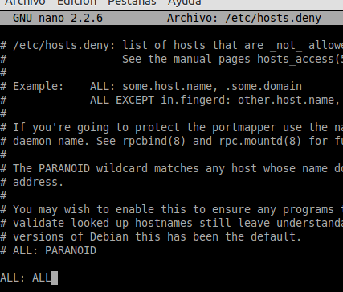

- Módulo: Administración de Sistemas Operativos
- Título del trabajo Acceso Remoto SSH
- Componentes del grupo: Isabel Quintero Sánchez
- Curso Académico: 2014/2015
- Fecha de entrega: 26 de Octubre de 2014
Para esta práctica, vamos a necesitar 3 MV:
A continuación, configuraremos una máquina GNU/Linux que actuará como servidor SSH.El nombre de usuario será el nombre del alumno (isabel)
la clave del usuario el DNI del alumno, clave del usuario root el DNI del alumno, el nombre de equipo el ssh-server y el
nombre de dominio el primer apellido del alumno (quintero).
Después, debemos crear cuatro usuarios, de los que sólo pondré una captura de pantalla para no llenar mucho el informe y que usaremos mas adelante:
Configuramos el cliente1 GNU/Linux:
Para acabar con las configuraciones, instalamos el software en cliente SSH en Windows (PuTTY) y añadimos el shh-server y shh-client1.
Vamos a nuestra máquina que actúa como servidor e instalamos el servicio ssh-server a través del comando "apt-get install openssh-server".
Desde el propio SSH-SERVER, verificamos que el servicio está en ejecución con los comandos: "service ssh status", "/etc/init.d/ssh status" y "ps -ef|grep ssh"
Modificar el fichero de configuración SSH/etc/ssh/sshd_config para dejar una única línea:HostKey /etc/ssh/ssh_host_rsa_key.
Al finalizar, reiniciamos el servicio ssh.
Comprobamos el funcionamiento de la conexión SSH desde cada cliente usando el usuario remoteuser1. Desde el cliente hacemos "ssh remoteuser1@ssh-server".
Ahora, probaremos la conexión ssh con nuestro cliente Windows. Para ello, utilizaremos el Putty.
Comprobamos el contenido del fichero "$HOME/.ssh/known_hosts." en el equipo cliente.
Generamos nuevas claves de equipo en SSH-SERVER como usuario root, ejecutamos en SSH-SERVER: "ssh-keygen -t rsa -f /etc/ssh/ssh_host_rsa_key"
Tras esto, comprobamos qué sucede al volver a conectarnos desde los clientes, usando el usuario remoteuser2 y remoteuser1. ¿Qué sucede?.

Se produce un fallo y no nos deja conectarnos porque se ha cambiado la clave en el servidor y no corresponde con la que tiene el cliente. Para que vuelva a funcionar, en el cliente, ejecutamos el siguiente comando: "ssh-keygen -f /home/efrain/.ssh/known_hosts -R ssh-server"
Vamos a configurar los ficheros necesarios para cambiar el color cuando tenemos activa una sesión SSH.Por ejemplo, podemos añadir las siguientes líneas al fichero "/home/remoteuser1/.bashr" de configuración del usuario en la máquina servidor.
Y, comprobamos si ha cambiado el color:
Vamos a configurar autenticación mediante clave pública para acceder con nuestro usuario personal desde el equipo cliente al servidor con el usuario remoteuser4.Vamos a la máquina cliente (no usar el usuario root), iniciamos sesión con nuestro usuario desde la máquina cliente y ejecutamos "ssh-keygen -t rsa" para generar un nuevo par de claves para el usuario en "/home/nuestro-usuario/.ssh/id_rsa" y "/home/nuestro-usuario/.ssh/id_rsa.pub".
Después,vamos a copiar la clave pública del usuario de la máquina cliente al fichero "authorized_keys" del usuario remoteuser4 en el servidor. Hacemos "scp .ssh/id_rsa.pub remoteuser4@ssh-server:.ssh/authorized_keys".
Comprobamos que conectándonos desde remoteuser4 no nos pide la contraseña.
Vamos a nuestro servidor e instalamos geany (apt-get install geany)
Seguidamente,editamos el fichero de configuración "/etc/ssh/sshd_config" para permitir la ejecución de aplicaciones remotamente desde los clientes, activando la línea "X11Forwarding yes".
A continuación, comprobamos el funcionamiento de geany desde cliente GNU/Linux..

Instalamos el emulador Wine en nuestro servidor (apt-get install wine).
A continuación nos conectamos remotamente con un usuario y ejecutamos "wine notepad".
Vamos a modificar los usuarios del servidor SSH para añadir algunas restricciones de uso del servicio.
Usuario sin restricciones:
Vamos a crear una restricción de uso del SSH para un usuario: modificamos el fichero de configuración del servidor SSH "/etc/ssh/sshd_config" para conseguir restringir el acceso al usuario "remoteuser1".
Reiniciamos el servicio ssh e Intentamos conectarnos con dicho usario y comprobamos que no nos deja.
Vamos a crear una restricción para que sólo las máquinas clientes con las IP's autorizadas puedan acceder a nuestro servidor.
Consultar los ficheros de configuración "/etc/hosts.allow" y "/etc/host.deny", modificamos la configuración en el servidor para denegar accesos de todas las máquinas, excepto nuestros clientes y comprobamos su funcionamiento.
Seguidamente, editamos el fichero "/etc/hosts.deny" añadiéndole "ALL:ALL", es decir, todas las ip estan restringidas salvo la que están en "/etc/hosts.allow".
Ahora, vamos a nuestra máquina cliente (tiene ip permitida) y nos intentamos conectar y si se puede.
Sin embargo, si vamos al Windows 7 (cliente) y le ponemos una ip que no esté en el rango permitido no nos dejará.
Crearemos una restricción de permisos sobre determinados programas.
Usaremos el usuario remoteuser4, creamos el grupo "remoteapps"
Añadimos el usuario "remoteuser4" al grupo.
Buscamos donde esta instalado el ejecutable del programa "geany". Exactamente esta en "/usr/bin" y le añadimos como propietario al grupo remoteapps.

Poner los permisos del ejecutable de geany a 750. Para impedir que los que no pertenezcan al grupo puedan ejecutar el programa.
Si intentamos ejecutar el programa desde otro usuario que no perteneza al grupo remoteapps pasa lo siguiente: